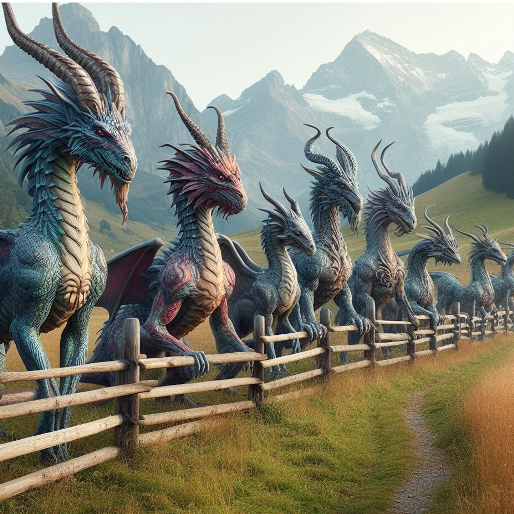
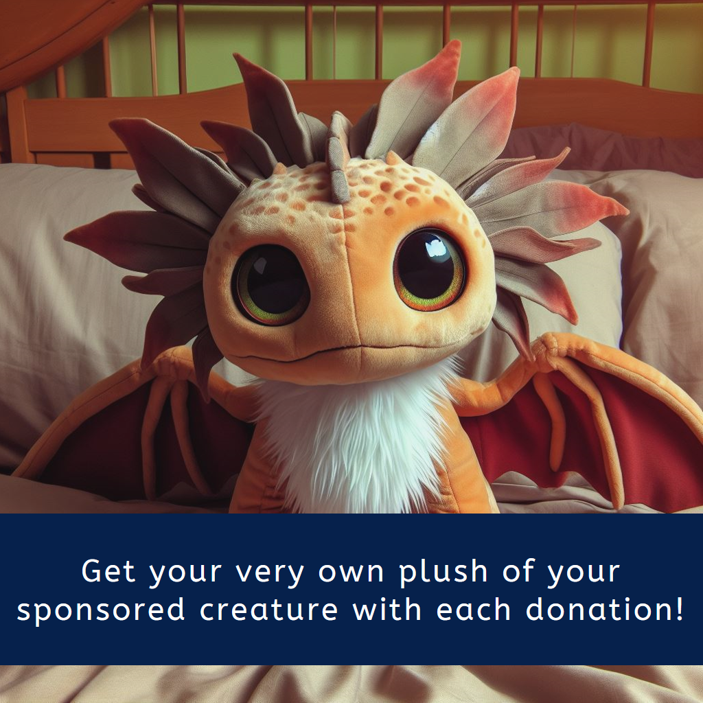

.png)
.png)
We are a charity organization based out of the beautiful Swiss mountains. Our goal is to keep the myth and magic alive of the great creatures we have here at the sanctuary. We provide world class care, rehabilitation, and conservation of some of the rarest and most amazing creatures this world has to offer. All of the donations that we receive here are instantly put into resources for the sanctuary rather that is buying the specialized food for the animals, helping grow and expand the sanctuary, making sure that the animals have any specialized care they may need, and much more!
“Our organization is unlike any other! We want our donors to be just as involved as any of our staff who are on the premises caring for these amazing creatures. With every donation made, you will be able to adopt your very own mythical creature! You can sign up for texts or emails for updates on your adopted creature, and even personalized videos! Another great thing about our organization is we let you know exactly where your money is going. Whether it be for food, medical treatment, shelter, you will be in the know learning how your donation helped our beautiful creatures!"
Each of our wonderful donors will be kept up to date on the creature that you adopt via text or email. When you receive your messages each month they will include photos and sometimes even videos of your adopted creature. Every new donor with a donation of $25 or more will also receive a tee shirt and pin. With a donation of $50 or more you will also get your very own plush of your adopted creature! Our rehabilitation center is not opened to the public, for too many people could stress our creatures. However, we do have a monthly donation package to where our donors can come and visit. Whether it be to take a tour and see face to face how and where their donations are going, or to just visit their creature they've adopted. Visitors can feed the creatures they've adopted as well! The monthly package starts at $100 minimum, but donors can donate as much as they'd like each month. The package offers one visit every month, and can be used for you and one other guest. We know here at our center times gets tough, so if you are unable to pay for a month, you can give us a call and we can skip your payment for the month.
 .png)
.png)